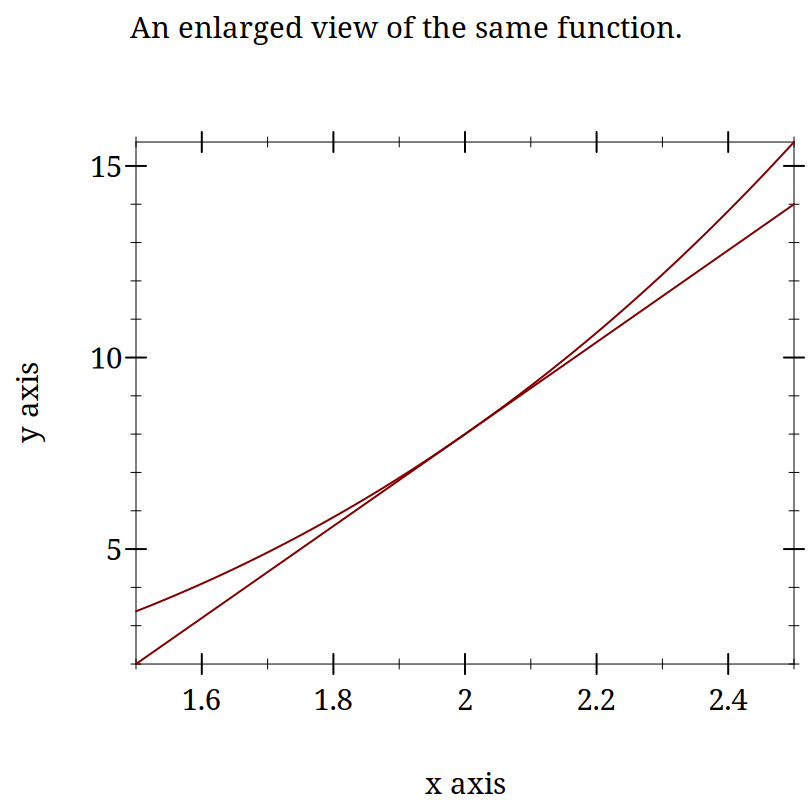
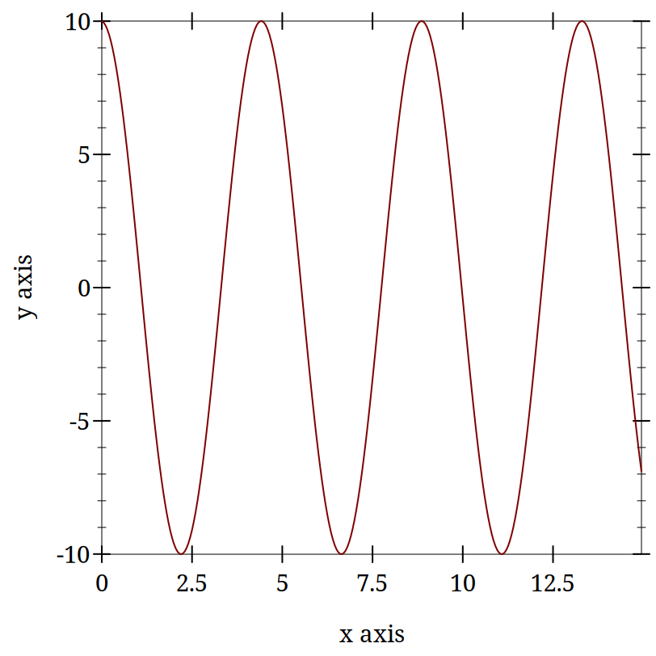

3
3.1 Models of Spiking Neurons and Differential Equations
3.1.1 An Introduction to Differential Equations
Why are Differential Equations an important technique for computational modelling in psychology and neuroscience?
The Action Potential
10 minutes to brush up on what an action potential is
Then be able to draw one and explain,
What are the axes?
What ion causes the upward deflection?
What causes the repolarization?
Who discovered the action potential?
Who won the Nobel Prize for characterizing the ionic events of the action potential experimentally and building a mathematical model?
Did you draw this?
Why is the action potential relevant for a discussion of DE’s in modelling?
Notation Concise summaries of things that would take too long to write out in detail. Mathematical notation is just a technical emoji. You probably know the "math" they represent; you just don’t know the abbreviation that is being used.
3.1.1.1 Multiple Ways to Say the Same Thing
\frac{dx}{dt}
\dot{x}
x’
f’(x)
3.1.2 Derivatives are Slopes
What is a slope?
When in doubt return to definition.
Deriving the definition of a derivative.
What is the definition of a derivative?
Digression: Use your computer as a tool for exploration
> (begin (define xs (list 1 2 3 4 5)) (define ys (list 2 4 6 8 10)) (plot (lines (map vector xs ys))))



Derivatives are Instantaneous Slopes
You pick two points that are "close enough" and you get an answer that is "close enough." If your answer isn’t "close enough" then you move your points closer, until /in the limit/ there is an infinitesimal distance between them.
Definition of the Derivative
\frac{df}{dx} = \lim_{h \to 0}\frac{f(x + h) - f(x)}{(x + h) - x}
3.1.3 Using Derivatives to Solve Problems With a Computer
3.1.3.1 What is the square root of 53?
We want to know the value of x that makes 53 =x^2 true?
Always use the computer for the busy work when you can. Your computer can solve many mathematical problems for you. For example, requiring symalg we can programatically find that the derivative of x^2 is 2 x
Come up with a guess.
Calculate the error.
Adjust your guess based on the error.
This adjustment will use the derivative.
3.1.3.1.1 Working Through an Example
Let’s say we want to solve for x when x^2 = 128. How might we start? When in doubt, guess!
How much is your guess off?
What we want to do now is adjust our guess. Since we know how much our function changes its output for each adjustment in the input, How do we know this? Our derivative is a rate of change. we can revise our guess based on this necessary adjustment. If we are still wrong, we just repeat the process.
To get there let us consider representing the ratio of how our function’s output changes for changes in input. We can just make things concrete.
If you take a look at the definition of the derivative above you will see the resemblance, except for the absence of the limit. When trying to solve this problem we don’t initially know both inputs, but we do know that when we put in the solution to our problem we will get 128. And we also know that we can computer the derivative. A bit of rearranging and renaming give us.
What is square root of 128?
> (define (df g) (* 2.0 g))
> (define (update-guess g target) (/ (- target (expt g 2.0)) (df g)))
> (define (my-sqrt [target 128.0] [guess 7.0] [tol 1e-6]) (let* ([udg (update-guess guess target)] [current-guess (+ guess udg)]) (if (< udg tol) current-guess (my-sqrt target current-guess))))
(my-sqrt 55.0 4.0)]
What is a cube root?
What is the derivative of x^3?
Write a Racket program to computer the cube root of a give number.
3.1.3.2 Practice Simulating With DEs
3.1.3.2.1 Frictionless Springs
We want to code neurons, but to get there we should feel comfortable with the underlying tool or we won’t be able to adapt it or re-use it for some new purpose. I don’t want to give you a fish. I want to teach you how to fish.
By working with an example simpler than a neuron, and one for which you might have more intuition, such as a simple spring or "slinky" I hope you will get a better /feel/ for how the numbers, equations, and code all relate. Then we can move on to the neuronal application.
The equation of a frictionless spring is:
Imagine that we knew this derivative. It would tell us how much space the spring head would move for a given, very small, increment of time. We could then just add this to our current position to get the new position and repeat. This method of using a derivative to iterate forward is sometimes called the Euler method.
Returning to our definition of the derivative:
But our spring equation is not given in terms of the velocity it is given in terms of the acceleration which is the second derivative. Therefore, to find our new position we need the velocity, but we only have the acceleration. However, if we knew the acceleration and the velocity we could use that to calculate the new velocity. Unfortunately we don’t know the velocity, unless ... , maybe we could just assume something. Let’s say it is zero because we have started our process where we have stretched the spring, and are holding it, just before letting it go.
How will our velocity change with time?
And we have a formula for this. We can now bootstrap our simulation.
Note the similiarity of the two functions. You could write a helper function that was generic to this pattern of old value + rate of change times the time step, and just used the pertinent values.
How do we know the formula for acceleration? We were given it \ref{eq:1}.
> (require "./code/spring.rkt")
> (begin (define spring-results (release-spring)) (plot (lines (map vector (map fourth spring-results) (map third spring-results))))) 
3.1.3.3 Damped Oscillators
Provide the code for the damped oscillator. It has the formula of
This should really only need to change a couple of lines to update the model to be able to handle the damped version as well. You might want to edit spring.rkt.